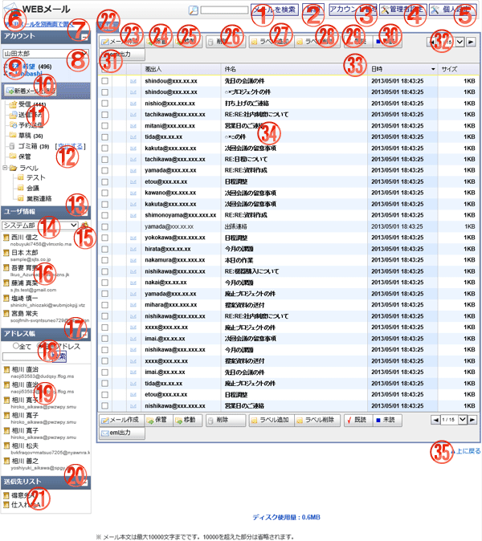

WEBメールの受信画面です。

機能説明
メールを検索ボタン入力された検索条件で検索を行い結果を表示します。 |
詳細ボタン詳細検索画面を表示します。 |
|---|---|
アカウント管理ボタンアカウント管理画面に遷移します。 |
管理者設定ボタン管理者設定画面に遷移します。 |
個人設定ボタン個人設定メニュー画面に遷移します。 |
WEBメールを別画面で開くリンクWEBメール受信画面を別画面で開きます。 |
アカウント詳細切り替えクリックするとアカウント詳細が表示されます。 |
アカウントコンボ選択したアカウントに切り替えます。 |
アカウント一覧クリックしたアカウントに切り替えます。 |
新着メールを確認ボタン新着メールが存在するか確認を行い、存在すればメールの受信を行い、受信一覧に表示します。 |
ディレクトリ指定したディレクトリにあるメールを一覧表示します。 |
ゴミ箱を空にするリンクゴミ箱に入っているメールを削除します。 |
ユーザ情報詳細切り替えクリックするとユーザ情報詳細が表示されます。 |
グループコンボ選択したグループのユーザ情報一覧を表示します。 |
グループボタンポップアップでグループ選択画面が開きます。 |
ユーザ情報クリックしたユーザのアドレスを宛先に設定してメール作成画面に遷移します。 |
アドレス帳詳細切り替えクリックするとアドレス帳詳細が表示されます。 |
アドレス帳検索ボタン入力された検索条件でアドレス帳検索を行い検索結果を表示します。 |
アドレス一覧クリックしたアドレスを宛先に設定してメール作成画面に遷移します。 |
送信先リスト切り替えクリックすると送信先リスト詳細が表示されます。 |
送信先リスト一覧クリックすると選択した送信先リストの選択画面がポップアップで表示されます。 |
タブクリックされたタブに応じた項目を画面に表示します。 |
メール作成ボタンメール作成画面を表示します。 |
保管ボタンチェックボックスで選択したメールを保管フォルダに保存します。 |
移動ボタンチェックボックスで選択したメールを指定したフォルダに移動します。 |
削除ボタン選択したメールを削除します。 |
ラベルを追加ボタン選択したメールにラベルを追加します。 |
ラベルを削除ボタン選択したメールのラベルを削除します。 |
既読ボタン選択したメールを既読にします。 |
未読ボタン選択したメールを未読にします。 |
eml出力ボタンeml形式で選択されたメールをダウンロードします。 |
ページングコンボ・前頁・次頁ページングコンボで任意のページへ、前頁アイコンクリックで前のページへ、次頁アイコンクリックで次のページへそれぞれ遷移します。 |
ヘッダタイトルクリックによって一覧のソート条件の切り替えを行います。 |
メール詳細選択したメールの詳細を表示します。 |
上に戻るリンク画面の最上部を表示します。 |
表示・入力項目説明
メール検索キーワード
メール検索キーワードを入力します(100文字以内)。
アドレス帳検索キーワード
アドレス帳検索キーワードを入力します。